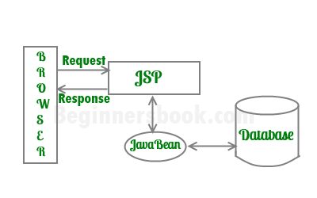
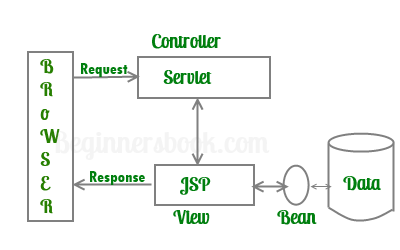

JSP is a server side technology that does all the processing at server. It is used for creating dynamic web applications, using java as programming language.
Basically, any html file can be converted to JSP file by just changing the file extension from “.html” to “.jsp”, it would run just fine. What differentiates JSP from HTML is the ability to use java code inside HTML. In JSP, you can embed Java code in HTML using JSP tags. for e.g. run the code below, every time you run this, it would display the current time. That is what makes this code dynamic.
<HTML> <BODY> Hello BeginnersBook Readers! Current time is: <%= new java.util.Date() %> </BODY> </HTML>
Your First JSP
Let’s start learning JSP with a simple JSP.
<%-- JSP comment --%>
<HTML>
<HEAD>
<TITLE>MESSAGE</TITLE>
</HEAD>
<BODY>
<%out.print("Hello, Sample JSP code");%>
</BODY>
</HTML>
The above JSP generates the following output:
Hello, Sample JSP code.
Explanation of above code
1) The line <%–JSP Comment–%> represents the JSP element called JSP Comment, While adding comments to a JSP page you can use this tag, we will discuss this in detail in coming posts.
Note: JSP Comments must starts with a tag <%– and ends with –%>
2) Head, Title and Body tags are HTML tags – They are HTML tags, frequently used for static web pages. Whatever content they have is delivered to client(Web browser) as such.
3) <%out.print(“ Hello, Sample JSP code ”);%> is a JSP element, which is known as Scriptlet. Scriptlets can contain Java codes. syntax of scriptlet is: <%Executable java code%>. As the code in Scriptlets is java statement, they must end with a semicolon(;). out.print(“ Hello, Sample JSP code ”) is a java statement, which prints“ Hello, Sample JSP code”.
As discussed, JSP is used for creating dynamic webpages. Dynamic webpages are usually a mix of static & dynamic content.
The static content can have text-based formats such as HTML, XML etc and the dynamic content is generated by JSP tags using java code inside HTML .
Servlet Vs JSP
Like JSP, Servlets are also used for generating dynamic webpages. Here is the comparison between them.
The major difference between them is that servlet adds HTML code inside java while JSP adds java code inside HTML. There are few other noticeable points that are as follows:
Servlets –
- Servlet is a Java program which supports HTML tags too.
- Generally used for developing business layer(the complex computational code) of an enterprise application.
- Servlets are created and maintained by Java developers.
JSP –
- JSP program is a HTML code which supports java statements too.To be more precise, JSP embed java in html using JSP tags.
- Used for developing presentation layer of an enterprise application
- Frequently used for designing websites and used by web developers.
Advantages of JSP
- JSP has all the advantages of servlet, like: Better performance than CGI Built in session features, it also inherits the the features of java technology like – multithreading, exception handling, Database connectivity,etc.
- JSP Enables the separation of content generation from content presentation. Which makes it more flexible.
- With the JSP, it is now easy for web designers to show case the information what is needed.
- Web Application Programmers can concentrate on how to process/build the information.
Architecture of a JSP Application
Before we start developing web application, we should have a basic idea of architectures. Based on the location where request processing happens (Servlet OR JSP(java server pages)) there are two architectures for JSP. They are – Model1 Architecture & Model2 Architecture.
1) Model1 Architecture: In this Model, JSP plays a key role and it is responsible for of processing the request made by client. Client (Web browser) makes a request, JSP then creates a bean object which then fulfils the request and pass the response to JSP. JSP then sends the response back to client. Unlike Model2 architecture, in this Model most of the processing is done by JSP itself.

2) Model2 Architecture: In this Model, Servlet plays a major role and it is responsible for processing the client’s(web browser) request. Presentation part (GUI part) will be handled by JSP and it is done with the help of bean as shown in image below. The servlet acts as controller and in charge of request processing. It creates the bean objects if required by the jsp page and calls the respective jsp page. The jsp handles the presentation part by using the bean object. In this Model, JSP doesn’t do any processing, Servlet creates the bean Object and calls the JSP program as per the request made by client.

thanks I find your website better than my book, its easy to learn and understand . Each point is clear, great work admin. I have following three questions with respect to JSP. Could you please provide me the answers?
1) Can we implement an interface in a JSP?
2) Difference between ServletContext and ServletConfig?
3) How to disable session in JSP?
Hey Zoyeb,
Thanks for stopping by. Here are the answers:
1) No we cannot implement an interface in a JSP page. We are only allowed to extend a class in JSP using extends attribute of page directive < %@ page extends="somePackage.SomeClass" %>
2) The major two differences between ServletContext and ServletConfig are as follows:
a) ServletConfig gets created every time during creation of a Servlet while ServletContext gets created only once per web application.
b) ServletConfig is used to access the ServletContext while ServletContext is used to access the server information.
3) This is how you can disable the session on a JSP page:
< %@ page session="false" %>
Setting up the session attribute of page directive to false. I have already covered this in the page directive section of this tutorial.
Hi Chaitanya,
I am confused after watching request handling architecture here . As per my understanding request from browser first handled by jsp container which converted jsp into servlet and then compiled servlet class executed and send back response to client through web container. So jsp must be on second step of architecture. Please clarify soon.
Thanks
Abhinav
Hello Abhinav the use of bean classes is only to set and get the values by using setter and getter methods… We can use this terminology in every Java technology